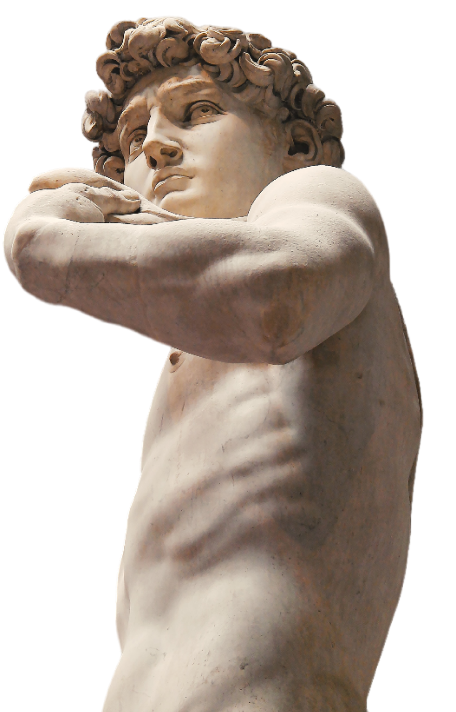
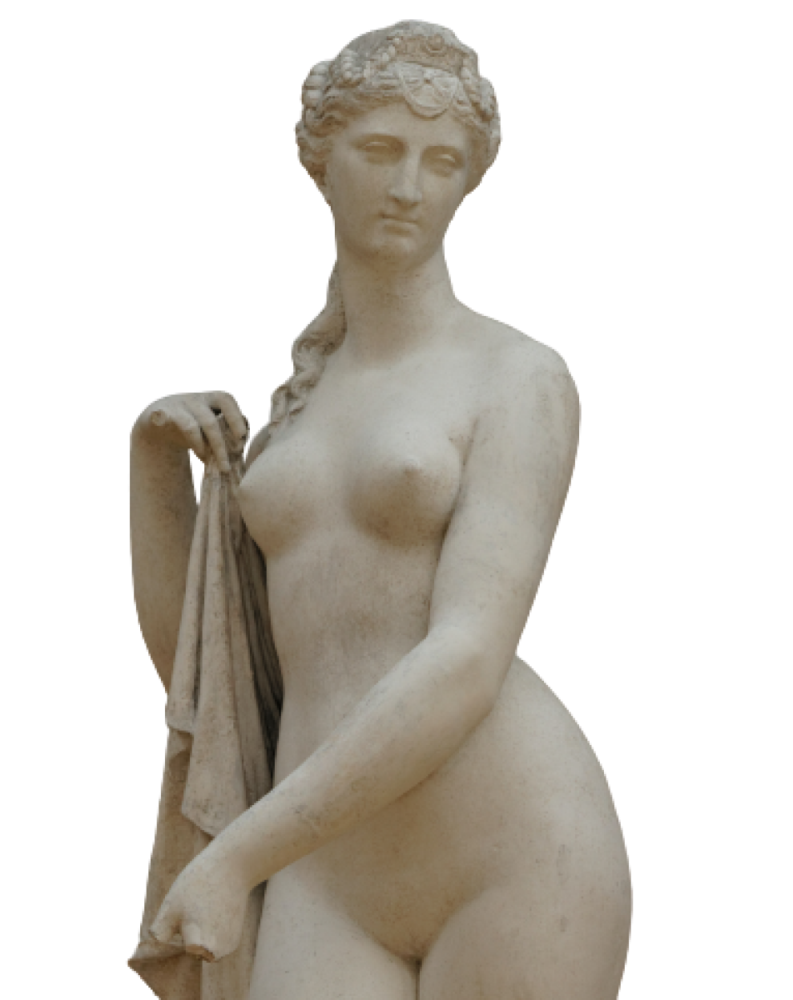

Se você está planejando visitar São Paulo, não deixe de incluir a Vivere Artem em seu roteiro! Além das exposições permanentes, a Vivere Artem também oferece exposições temporárias, que apresentam uma variedade de obras de diferentes períodos da história da arte. A Vivere Artem é uma ótima opção de passeio para toda a família. A exposição oferece atividades educativas para crianças e jovens, estimulando o interesse pela história e cultura.
VIVERE ARTEM

E se você é um estudante de arte ou história, ao museu oferece visitas guiadas e palestras educativas sobre a arte renascentista. Essas atividades são uma ótima maneira de aprender mais sobre a história e a cultura, e podem ser agendadas previamente pelo site da exposição. Venha descobrir a Vivere Artem e enriqueça sua experiência cultural.
Se você é um professor interessado em levar seus alunos para uma visita educativa, a Vivere Artem oferece programas educacionais personalizados para escolas. Com atividades interativas e enriquecedoras, seus alunos terão a oportunidade de aprender sobre a história e a cultura da arte renascentista de uma maneira divertida e envolvente.
A Vivere Artem também oferece um café aconchegante para seus visitantes, onde você pode relaxar e desfrutar de uma bebida enquanto aprecia a beleza da arte renascentista. O café oferece uma variedade de opções de bebidas e lanches para todos os gostos.